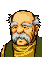

Narration
森をぬけたリーフたち『解放軍』は
ついにレンスター南門にたどりつく
しかし、手うすなはずの南門も、高いガケと
多数のシューターに守られて
簡単には近づけない状態にあった
Opening 1

王子、レンスター城が見えました
ここは裏手になりますから
敵も油断していることでしょう

だがアウグスト
東側はガケばかりで
城にたどり着けない
西からまわりこめば
シューターにねらいうちにされる
いったいどうするつもりだ？
さよう・・・
石弓部隊があれほどいようとは
予想外ですな
とはいえ、グズグズしていれば
敵の増援が現れる
こまりましたな・・・
ドリアスの意見は？

シューターを倒さねば前進は無理です
魔法で送り込むか、空から攻撃するか・・・
いずれにしても
多少の犠牲は覚悟せねばなりません
わかった
何かよい方法がないか
考えてみよう
Opening 2
アマルダ将軍、貴女ほどの方が
裏門の警備にまわされるとは
いったい何があったのです？

どうやら
私の意見がグスタフ侯の
お気にさわったようです・・・
子供狩りの一件ですな
また口論なされたのか？
グスタフ侯は、国王の命令もないのに
この辺りの村々から
子供を奪っています
ロプト教団への
ささげものにしようとしているのです
そのようなことが
許されてよいと思いますか？
まあまあ、アマルダどの
貴女の気持ちもわかるが
子供を集めることはアルヴィス皇帝も
承知されていることだ
おそかれ早かれこの辺りの子供たちは
みな、帝都に連れ去られてしまうのだ
貴女一人が反対してもどうにもならん
くっ、どうしてこんなことに！！
私はアルヴィス皇帝を信じていた
あの方にあこがれて軍人になったのに
いったいどうなされてしまったというの？
Next to the gate
Only if you paid 20000G at the house (lower left)

よう、待ってたぜ
話は親分から聞いてるよ
ま、がんばんな
Leif's army enters the castle walls
城があぶない・・・
・・・全軍、これより救援に向かう
反乱軍におくれをとるな！
House all except lower left
If Leif visits

ああっ・・・リーフ様・・・
よくお帰りくださいました
われらレンスターの民は
この日をどれほど
待ちわびていたことか・・・
村長・・・村のみんなも
長い間
辛い思いをさせてすまなかった
だが、もう大丈夫だ
今からレンスター騎士団の総力をもって
城の奪回に向う
われらの勝利を信じてほしい
王子、お願いがあります
私たちも城への進軍の
お手伝いをさせてください
手伝い・・・
村の人たちが戦うというのか？
はい、私たちは今まで
帝国のどんな仕打ちにも
たえてきました
ですが
いつかはきっと祖国の解放をと
密かに武器を集めて準備をしていたのです
だが村長
城内には多数の石弓があるという
ろくな装備をもたぬ民兵では
ねらい撃ちにされてしまうぞ
むろん
生きて帰れるとは思っておりません
私たちは王子の盾になれればよいのです
石弓は私たちが引きつけます
王子はその間に城の攻略を・・・
ばかな！
あなたたちを失って何のための勝利だ！
ぼくはそんなことは許さない！
リーフ様・・・
この十数年、私たちがどれほど
辛い思いをしてきたかご存知でしょうか
若い娘たちは領主のグスタフに奪われ
子供たちはロプト教団に奪われました
反抗したものは
じつにむごい仕打ちをうけて
家族もろとも殺されました
王子様・・・
私たちのような弱者は
国を失っては生きてはいけません
だから、国が取り戻せるなら
たとえどのようなことでも
協力いたします
私たちの命など
少しも惜しくはないのです
村長・・・
リーフ王子、おわかりか
国が滅んでもっとも哀れなのは
残された民だ
彼らは
騎士が言うような安っぽい忠義心で
死のうと言っているのではない
子どもじみた感傷で
彼らの気持ちを
ふみにじってはなりませぬぞ
・・・アウグストは
彼らに協力を求めろと言うのか！？
それも一つの方法だと
申し上げておるのです
ドリアスの意見は？
村人の気持ちも
わからぬではありませんが
やはり私は反対です
だが、いずれにしても
リーフ様がはんだんされること
いかがいたしましょうか？
→ 住民に協力してもらう
自分たちの力で攻める
If someone other than Leif visits
.png)
あんたら、レンスター軍の人たちだろ？
リーフ様はどこにいらっしゃるんで？
House lower left
If you have 20000G or more
よう、おめえさんら
レンスター城を攻めるんだろう？
一つ耳寄りな話があるんだが・・・
実はな
あの城の東の門にゃ
ちと工夫がしてあってよ
オレたちが
ちょいとそれを動かしゃ
門が開くって仕かけになってんだ
どうだい
おれたちを使ってみる気はねえか？
もちろんタダってわけにゃいかねえ
２００００Ｇばかし
積んでもらうってセンで・・・
なに、高い？ バカいっちゃいけねえ
オレたちだって命がけなんだ
そのくらいはもらわねえとな
いやならいいんだぜ、どうする？
→ ２００００Ｇはらう
もったいないから正面から攻める
If you have less than 20000G
なんだなんだ
金のねえヤツにゃ用はねえよ
さっさと帰った帰った
After seizing
ようやく城門までたどりついたが
城内のようすはどうだ？
アウグスト
集めた情報を聞かせてくれ
はっ・・・
城将はグスタフという男で
ブルーム王の側近ですな
いろいろと問題が多い男です
グスタフ侯爵か・・・
この十数年、レンスターの領主として
暴虐のかぎりをつくした男だな・・・
さよう
指揮官としては二流ですが
金にあかして
優れた武具を装備しておるゆえ
なかなかの強敵かもしれませぬ
他には？・・・
問題はゼーベイア将軍ですな
これがなかなかの武人であるらしく
配下の重騎士どもも
かなりの者達と思われます
ゼーベイアだと！
くっ・・・
あの裏切り者め！！！
ドリアス？・・・
知っているのか？
はっ・・・
お恥ずかしいことですが
ゼーベイアは
かつてレンスターの将軍でありました
義実な人間として
誰もが信頼しておりましたが
レンスターが滅亡となるや
手のひらをかえすようにして
敵にねがえってしまったのです！
私は許せない！
あの恥知らずめは、私がこの手で
必ずしとめてみせます！！
ドリアス卿！！
それはちがいますぞ！
村長？・・・
何を言っているのだ？
裏切り者をかばうつもりか！
そうではないのです
ゼーベイア将軍は、私たちを守るため
やむなく軍門に降られたのです
国は滅亡し
われら庶民は敵の中に
おきざりにされてしまいました
将軍はそんな私たちを哀れに思い
自らの名誉とひきかえにして
お救い下されたのです
将軍がいらっしゃらなければ
私たちは生きてはおれませんでした
なんと！・・・
それはまことなのか！！
だが、それならなぜ
王子が戻られた今も
手をこまねいているのだ？
配下の兵を率いて
城内で反乱を起こせば
たやすく城も落とせようものを・・・
それが・・・
将軍には苦楽をともにした
８名の副官がおいでなのだが
彼らの妻子は城内に
人質として捕えられているのです
将軍としても
その副官たちの同意がなければ
どうすることもできません
なにせ部下思いの
お優しい方ですから・・・
では、その人質をたすければ
将軍は解放されるのか！！
しかし、そう簡単には・・・
ぼくは将軍にわびねばならない
生き残った王族として
彼に謝らなければならないんだ！
Only if you did not ask the resistance for help, or none of them died
ではリーフ様
私たちからはこれを
これはナイトプルフ・・・
騎士の勲章だな
はい
城攻略ではなんのお手伝いも
できませんでしたから
せめてこれくらいはと思い
お持ちしました
ありがとう、村長
村のみんなにも
よろしくお伝えください
城を奪回されれば
リーフ様は
正式に『プリンス』となられます
このような時ですから
盛大な式典とはまいりませんが
国民はみな
王子の晴れ姿を
楽しみにしておりますぞ
Palman: battle quote
貴様らにこの城はわたさん！
Palman: defeat quote
・・・フリージは
・・・遠いな・・・
Palman: release quote
もう軍人としては生きられぬ
とりあえず国に帰るか・・・
Amalda: battle quote
私は、一体
何をしているのだろう・・・
Amalda: defeat quote
これでいい・・・
血まみれの・・・私には・・・
無様な最期こそふさわしい・・・
Amalda: release quote
また、悪夢の続きを
見なければならないのね・・・